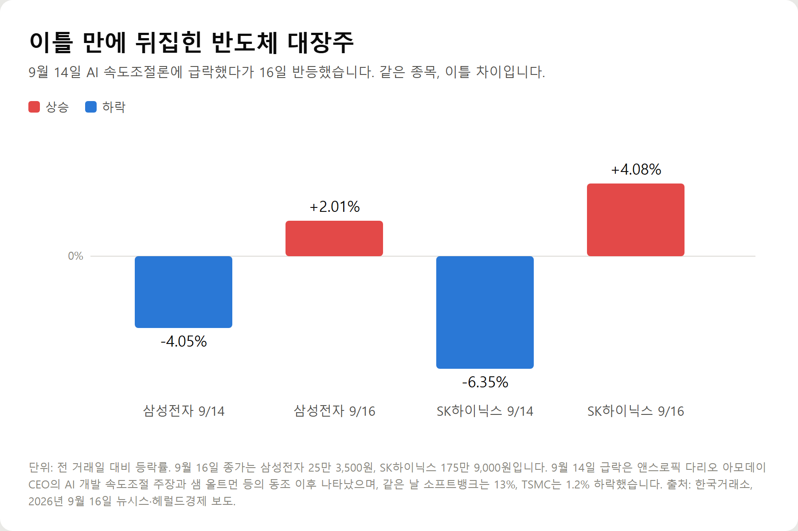
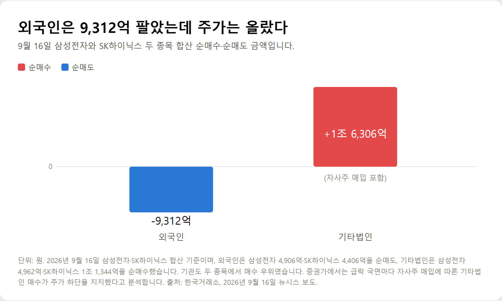
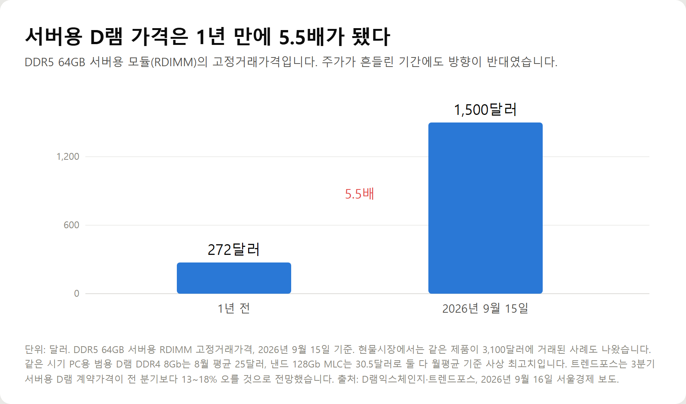
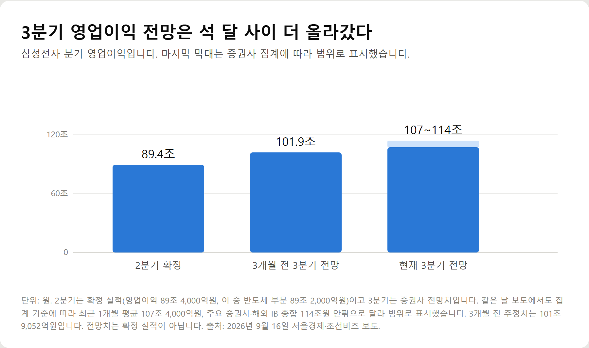

<meta charset="utf-8">
<title>이틀 만에 뒤집힌 반도체주, 무엇을 봐야 하나 — 나의 투자 그리고 행복한 여행</title>
<meta name="description" content="2026년 9월 16일 삼성전자 +2.01%, SK하이닉스 +4.08% 반등. 9월 14일 급락 원인과 수급, D램 고정거래가격, 삼성전자 3분기 영업이익 전망 107조~114조를 정리했습니다.">
<meta name="viewport" content="width=device-width, initial-scale=1">
<link rel="canonical" href="https://danielmoon82.github.io/moon/posts/chip-2026-09-16.html">
<link rel="preconnect" href="https://fonts.googleapis.com">
<link rel="preconnect" href="https://fonts.gstatic.com" crossorigin>
<link rel="stylesheet" href="https://fonts.googleapis.com/css2?family=Hahmlet:wght@400;600;800&family=IBM+Plex+Mono:wght@400;500&family=IBM+Plex+Sans+KR:wght@300;400;500;600&display=swap">

<style>
  :root{
    --paper:#F2EEE6;--surface:#FAF8F3;--surface-2:#E7E1D5;
    --ink:#191510;--ink-2:#4A4235;--ink-3:#7D7364;
    --line:#D6CEBF;--line-soft:#E4DDD0;--accent:#B06A15;--accent-bright:#C2761A;
    --up:#E5484D;--down:#3B82F6;
    --f-display:"Hahmlet",'Nanum Myeongjo',"Apple SD Gothic Neo",serif;
    --f-body:"IBM Plex Sans KR","Apple SD Gothic Neo","Malgun Gothic",sans-serif;
    --f-mono:"IBM Plex Mono","SFMono-Regular",Consolas,monospace;
    --pad:clamp(20px,5vw,64px);
  }
  @media (prefers-color-scheme:dark){
    :root:not([data-theme="light"]){
      --paper:#0B1120;--surface:#121A2C;--surface-2:#1A2439;
      --ink:#E9EEF7;--ink-2:#A9B5C9;--ink-3:#72809A;
      --line:#26314A;--line-soft:#1D2739;--accent:#E8A33D;--accent-bright:#F0B45C;
    }
  }
  *{box-sizing:border-box;}
  body{margin:0;background:var(--paper);color:var(--ink);font-family:var(--f-body);
    font-weight:300;font-size:1rem;line-height:1.75;-webkit-font-smoothing:antialiased;}
  a{color:inherit;}
  img{max-width:100%;height:auto;}
  .wrap{max-width:760px;margin:0 auto;padding-inline:var(--pad);}
  .nav{position:sticky;top:0;z-index:20;background:color-mix(in srgb,var(--paper) 88%,transparent);
    backdrop-filter:saturate(180%) blur(12px);border-bottom:1px solid var(--line);}
  .nav-in{display:flex;align-items:center;justify-content:space-between;height:58px;}
  .brand{font-family:var(--f-display);font-weight:600;font-size:1rem;letter-spacing:-.02em;text-decoration:none;}
  .back{font-family:var(--f-mono);font-size:.72rem;color:var(--ink-3);text-decoration:none;}
  .article{padding-block:clamp(40px,7vw,72px) clamp(56px,9vw,96px);}
  .eyebrow{font-family:var(--f-mono);font-size:.68rem;letter-spacing:.16em;text-transform:uppercase;
    color:var(--accent);margin:0 0 14px;}
  h1{font-family:var(--f-display);font-weight:800;font-size:clamp(1.6rem,4.4vw,2.3rem);
    line-height:1.3;letter-spacing:-.03em;margin:0 0 16px;}
  .byline{font-family:var(--f-mono);font-size:.72rem;color:var(--ink-3);
    padding-bottom:24px;border-bottom:1px solid var(--line);margin-bottom:32px;}
  h2{font-family:var(--f-display);font-weight:600;font-size:1.25rem;letter-spacing:-.02em;margin:42px 0 14px;}
  h3{font-family:var(--f-display);font-weight:600;font-size:1.05rem;letter-spacing:-.02em;
    margin:30px 0 10px;padding-top:14px;border-top:1px solid var(--line-soft);}
  h3 .code{font-family:var(--f-mono);font-size:.7rem;font-weight:400;color:var(--ink-3);margin-left:6px;}
  p{margin:0 0 18px;color:var(--ink-2);}
  ul.checks{margin:0 0 18px;padding-left:20px;color:var(--ink-2);}
  ul.checks li{margin-bottom:8px;font-size:.94rem;}
  table{width:100%;border-collapse:collapse;font-size:.88rem;margin-bottom:8px;}
  th{font-family:var(--f-mono);font-size:.66rem;letter-spacing:.06em;text-transform:uppercase;
    color:var(--ink-3);text-align:right;padding:8px 6px;border-bottom:1px solid var(--line);}
  th:first-child{text-align:left;}
  td{padding:10px 6px;border-bottom:1px solid var(--line-soft);color:var(--ink-2);}
  td.num{font-family:var(--f-mono);text-align:right;font-variant-numeric:tabular-nums;}
  td.up{color:var(--up);} td.down{color:var(--down);}
  .scroll{overflow-x:auto;}
  figure{margin:22px 0;}
  figure img{display:block;border-radius:3px;background:var(--surface-2);}
  figcaption{margin-top:8px;font-family:var(--f-mono);font-size:.68rem;color:var(--ink-3);text-align:center;}
  .note{margin-top:34px;padding:16px 18px;border-left:3px solid var(--accent);
    background:var(--surface);border-radius:0 3px 3px 0;}
  .note p{margin:0;font-size:.85rem;color:var(--ink-3);}
  .foot{border-top:1px solid var(--line);background:var(--surface);padding-block:30px 38px;}
  .foot p{margin:0;font-size:.8rem;color:var(--ink-3);}
</style>

<nav class="nav">
  <div class="wrap nav-in">
    <a class="brand" href="../index.html">나의 투자 그리고 행복한 여행</a>
    <a class="back" href="../index.html#stocks">← 시황으로</a>
  </div>
</nav>

<main class="wrap article">
  <p class="eyebrow">Market</p>
  <h1>2026년 9월 반도체 시장 정리 — 급락·반등, D램 고정거래가, 3분기 실적 전망</h1>
  <p class="byline">주식 · 2026-09-16 기준</p>

  <p>한 줄 요약: 9월 14일 AI 속도조절론에 삼성전자 -4.05%·SK하이닉스 -6.35%로 급락했다가 16일 각각 +2.01%·+4.08%로 반등했습니다. 같은 기간 D램·낸드 고정거래가는 월평균 기준 사상 최고였습니다.</p>
  <p>9월 16일 종가와 수급(외국인 순매도 9,312억 / 기타법인 순매수 1조 6,306억), 메모리 고정거래가격, 삼성전자 3분기 영업이익 전망(107조~114조), 그리고 반대 방향 근거(원화 강세·가격 상승폭 둔화)를 함께 기록했습니다.</p>
  <h2>핵심만 먼저</h2>
  <ul class="checks">
    <li>9월 14일 — AI 개발 속도조절론에 삼성전자 -4.05%, SK하이닉스 -6.35%</li>
    <li>9월 16일 — 삼성전자 +2.01%(25만 3,500원), SK하이닉스 +4.08%(175만 9,000원), 코스피 6717.97</li>
    <li>수급 — 외국인은 두 종목 합쳐 9,312억 순매도, 기타법인은 1조 6,306억 순매수</li>
    <li>가격표 — 같은 기간 D램·낸드 고정거래가는 월평균 기준 사상 최고</li>
    <li>봐야 할 것 — 뉴스가 아니라 고정거래가격, 서버 D램 계약가, 마이크론 실적, 환율</li>
  </ul>
  <h2>1. 이틀 사이에 벌어진 일</h2>
  <p>같은 종목이 이틀 만에 방향을 바꿨습니다.</p>
  <figure><figcaption>삼성전자·SK하이닉스 9월 14일과 16일 등락률 (단위: %)</figcaption></figure>
  <p>14일에는 아시아 증시의 AI 관련주가 함께 주저앉았습니다. 소프트뱅크가 13%, TSMC가 1.2% 하락했습니다. 16일에는 코스피가 1.37% 오른 6717.97로 마감했고 코스닥도 815.98로 올랐습니다.</p>
  <p>이 기간에 두 회사가 공시한 악재나 호재는 없었습니다. 실적 발표도, 가이던스 변경도 없었습니다.</p>
  <h2>2. 급락의 방아쇠 — AI 속도조절론</h2>
  <p>시작은 발언이었습니다. 앤스로픽의 다리오 아모데이 CEO가 AI 모델 개선 속도를 늦추겠다고 밝혔고, 일론 머스크와 샘 올트먼 등이 여기에 동조했습니다.</p>
  <p>AI 개발 속도가 느려지면 데이터센터 투자가 줄고, 데이터센터가 줄면 메모리 수요가 줄어듭니다. 시장은 그 연결고리를 하루 만에 가격에 반영했습니다.</p>
  <p>그런데 15일(현지시간) 올트먼은 X에 짧은 글을 올렸습니다. 이번 주에 큰 출시가 있고, 개발자 행사에서 6개를 더 내놓겠다는 내용이었습니다. 오픈AI 개발자 행사는 9월 29일에 열립니다.</p>
  <p>무엇을 내놓는지는 밝히지 않았습니다. 개발자 커뮤니티에서는 GPT-6 '솔'이 아니냐는 관측이 돌지만 오픈AI는 존재도 일정도 공식 확인한 적이 없습니다. 확인된 것은 속도를 늦추자던 인물이 이틀 만에 출시를 예고했다는 사실뿐입니다.</p>
  <h2>3. 반등을 만든 것은 뉴스가 아니라 수급이었다</h2>
  <p>16일 반등이 외국인 매수 때문이라고 생각하기 쉽지만 반대였습니다.</p>
  <figure><figcaption>9월 16일 삼성전자·SK하이닉스 합산 투자자별 순매수·순매도 (단위: 원)</figcaption></figure>
  <p>외국인은 삼성전자 4,906억, SK하이닉스 4,406억을 팔아 합산 9,312억을 순매도했습니다. 그런데도 주가가 오른 이유는 기타법인이 1조 6,306억을 순매수했기 때문입니다. 기관도 두 종목에서 매수 우위였습니다.</p>
  <p>기타법인에는 자사주를 사들이는 회사 자신이 포함됩니다. 대신증권 이경민 연구원은 급락 국면마다 자사주 매입에 따른 기타법인 매수가 주가 하단을 지지해 왔다고 설명했습니다.</p>
  <p>SK하이닉스에는 하나가 더 있었습니다. 성과급 지급 방식을 둘러싼 노사 재합의안이 찬성 57%로 가결됐습니다. 초과이익분배금의 현금 비중을 40%에서 50%로 높이는 내용입니다. 실적과는 무관하지만 불확실성 하나가 걷힌 재료였습니다.</p>
  <h2>4. 주가는 발언에, 가격표는 수요에 반응했다</h2>
  <p>이 글에서 가장 중요한 부분입니다. 주가가 빠지던 그 기간에 메모리 가격은 반대로 갔습니다.</p>
  <figure><figcaption>서버용 DDR5 64GB 모듈(RDIMM) 고정거래가격 1년 전과 현재 (단위: 달러)</figcaption></figure>
  <p>서버용 DDR5 64GB 모듈의 고정거래가격은 9월 15일 기준 1,500달러입니다. 1년 전 272달러의 5.5배입니다. 현물시장에서는 같은 제품이 3,100달러에 거래된 사례도 나왔습니다.</p>
  <p>범용 제품도 마찬가지입니다. PC용 D램 DDR4 8Gb는 8월 평균 25달러로 한 달 전보다 4.2% 올랐고, 낸드 128Gb MLC는 30.5달러로 1.4% 올랐습니다. 둘 다 월평균 기준 사상 최고치입니다.</p>
  <p>이유는 공급 쪽에 있습니다. 메모리 3사가 생산능력의 상당 부분을 HBM과 서버용 DDR5, 기업용 SSD 같은 고부가 제품에 먼저 배정하면서 범용 메모리에 돌아갈 여유가 줄었습니다. 수요가 늘어서만이 아니라, 만들 수 있는 양을 다른 데 쓰고 있어서 생긴 가격입니다.</p>
  <p>트렌드포스는 3분기 서버용 D램 계약가격이 전 분기보다 13~18%, 낸드플래시가 10~15% 오를 것으로 봤습니다.</p>
  <h2>5. 실적 전망은 어디까지 올라왔나</h2>
  <p>가격이 오르면 실적에 그대로 반영됩니다. 삼성전자는 2분기 영업이익 89조 5,000억원을 기록했고, 이 가운데 89조 2,000억원이 반도체에서 나왔습니다. 사실상 전부입니다.</p>
  <figure><figcaption>삼성전자 분기 영업이익 — 2분기 확정과 3분기 전망 (단위: 원)</figcaption></figure>
  <p>3분기 전망치는 집계에 따라 다릅니다. 최근 1개월 평균으로는 107조 4,000억원, 주요 증권사와 해외 투자은행을 종합하면 114조원 안팎입니다. 3개월 전 추정치가 101조 9,052억원이었으니 그사이 더 올라갔습니다.</p>
  <p>HBM 쪽 변화도 있습니다. 삼성전자의 HBM4 매출 비중은 1분기 5%에서 2분기 35% 수준까지 확대됐고 수율도 개선되고 있다는 것이 증권가 평가입니다.</p>
  <p>배경에는 데이터센터 투자가 있습니다. 모건스탠리는 주요 클라우드 업체들이 내년 AI 인프라 구축에 1조 4,000억 달러, 약 1,890조원 이상을 쓸 것으로 추산했습니다.</p>
  <h2>6. 반대로 볼 근거도 분명히 있습니다</h2>
  <p>좋은 숫자만 적으면 글이 한쪽으로 기웁니다. 반대 방향 근거도 같은 자료에 나옵니다.</p>
  <ul class="checks">
    <li>환율 — 원·달러 환율이 두 달 사이 200원 넘게 내렸습니다. 원화가 강해지면 해외 매출의 원화 환산액이 줄어듭니다. 이를 반영해 전망치를 낮춘 증권사도 있습니다</li>
    <li>상승폭 둔화 — 3분기 범용 D램 계약가 상승률 13~18%는 1분기의 90%대 급등에 비하면 확연히 낮아진 수치입니다</li>
    <li>투자의견 하향 — BNK투자증권은 9월 15일 삼성전자 투자의견을 '보유'로 조정했습니다</li>
    <li>경쟁 구도 — LS증권은 2027년 SK하이닉스의 HBM 영업이익률 전망을 80%에서 60%로 낮췄습니다. 삼성전자의 HBM4 양산으로 격차가 줄어든다는 판단입니다</li>
  </ul>
  <p>즉 지금 구간은 '가격은 여전히 오르는데 오르는 속도는 느려지고, 환율이 이익을 깎는' 국면입니다. 좋다 나쁘다로 잘라 말하기 어려운 이유입니다.</p>
  <h2>7. 개인이 매달 확인할 수 있는 네 가지 숫자</h2>
  <p>뉴스는 하루 단위로 방향이 바뀝니다. 대신 주기가 정해져 있고 누구나 볼 수 있는 숫자가 있습니다.</p>
  <ul class="checks">
    <li>① D램·낸드 고정거래가격 — 월 단위로 발표됩니다. 범용 제품 가격이 꺾이는지가 사이클 전환의 첫 신호입니다</li>
    <li>② 서버용 D램 계약가 전망 — 트렌드포스 같은 조사업체가 분기 단위로 냅니다. 상승률이 줄어드는지를 봅니다</li>
    <li>③ 마이크론 실적 — 9월 30일에 발표됩니다. 매출 가이던스는 490억~510억 달러입니다. 국내 두 회사보다 실적 발표가 빨라 선행지표로 쓰입니다</li>
    <li>④ 원·달러 환율 — 같은 실적이라도 원화 환산액이 달라집니다</li>
  </ul>
  <p>이 네 가지는 발언과 달리 되돌려지지 않습니다. 말은 이틀 만에 바뀌었지만 가격표는 그대로였다는 것이 이번 사례의 교훈입니다.</p>
  <h2>헷갈리는 용어 정리</h2>
  <ul class="checks">
    <li>고정거래가격 — 기업 간 계약으로 정해지는 가격입니다. 월·분기 단위로 움직여 실적에 직접 반영됩니다</li>
    <li>현물가격 — 시장에서 그때그때 거래되는 가격입니다. 변동이 크고 고정거래가격보다 먼저 움직이는 경향이 있습니다</li>
    <li>HBM — 여러 층으로 쌓아 데이터 통로를 넓힌 메모리입니다. AI 연산에 쓰이며, 만드는 데 웨이퍼가 많이 들어가 일반 D램 생산을 잠식합니다</li>
    <li>기타법인 — 개인·기관·외국인에 속하지 않는 법인입니다. 자사주를 매입하는 회사 자신이 여기에 잡힙니다</li>
  </ul>
  <h2>자주 묻는 질문</h2>
  <p>Q. 9월 14일 반도체주는 왜 급락했나요?</p>
  <p>앤스로픽 다리오 아모데이 CEO가 AI 개발 속도를 늦추겠다고 밝히고 샘 올트먼 등이 동조하면서, AI 투자 둔화가 메모리 수요 감소로 이어질 수 있다는 우려가 반영됐습니다. 같은 날 소프트뱅크는 13%, TSMC는 1.2% 하락했습니다.</p>
  <p>Q. 이틀 만에 반등한 이유는 무엇인가요?</p>
  <p>증권가에서는 급락으로 밸류에이션 부담이 완화된 가운데 AI 수요와 메모리 업황의 구조적 개선은 훼손되지 않았다는 평가가 유지되면서 저가 매수가 들어온 것으로 봅니다. 수급으로는 기타법인의 1조 6,306억 순매수가 컸습니다.</p>
  <p>Q. D램 가격은 지금 어떤 상태인가요?</p>
  <p>2026년 8월 기준 PC용 DDR4 8Gb 평균 고정거래가격은 25달러, 낸드 128Gb MLC는 30.5달러로 둘 다 월평균 기준 사상 최고입니다. 서버용 DDR5 64GB 모듈은 9월 15일 기준 1,500달러로 1년 전의 5.5배입니다.</p>
  <p>Q. 지금이 고점인가요?</p>
  <p>확인된 사실로는 가격이 여전히 오르고 있지만 상승폭은 1분기보다 줄었습니다. 여기에 원화 강세가 이익을 줄이는 변수로 작용하고 있습니다. 고점 여부를 단정할 수 있는 자료는 없습니다.</p>
  <p>Q. 다음에 확인할 일정이 있나요?</p>
  <p>9월 29일 오픈AI 개발자 행사, 9월 30일 마이크론 실적 발표가 예정돼 있습니다. 마이크론 매출 가이던스는 490억~510억 달러입니다.</p>
  <h2>정리하면</h2>
  <p>이틀 사이 반도체 대장주는 6%대 급락과 4%대 반등을 오갔지만, 그동안 메모리 가격은 한 방향으로만 갔습니다. 주가는 발언에, 가격표는 수요와 공급 배분에 반응했습니다.</p>
  <p>판단 기준을 뉴스에서 숫자로 옮기면 이런 장이 훨씬 덜 흔들립니다. 고정거래가격, 서버 D램 계약가, 마이크론 실적, 환율 네 가지면 충분합니다.</p>
  <p>다음 글에서는 반도체 ETF 세 종류의 구성 종목과 보수 차이를 정리하겠습니다.</p>
  <div class="note"><p>이 글은 공개된 시장 데이터와 보도를 정리한 정보이며 특정 종목의 매수나 매도를 권유하지 않습니다. 증권사 전망치와 목표주가는 확정된 실적이 아니라 의견이며, 투자 판단과 그 결과의 책임은 투자자 본인에게 있습니다.</p></div>
  <p>※ 기준 시점: 2026년 9월 16일 종가. 시세·수급은 한국거래소 자료를 인용한 2026년 9월 16일 뉴시스·헤럴드경제 보도, 메모리 가격은 D램익스체인지·트렌드포스 집계를 인용한 같은 날 서울경제 보도, 실적 전망과 증권사 의견은 같은 날 조선비즈 보도 기준입니다. 삼성전자 3분기 영업이익 전망은 집계 기준에 따라 107조 4,000억원과 114조원 안팎으로 달라 범위로 표기했습니다.</p>
</main>

<footer class="foot">
  <div class="wrap"><p>나의 투자 그리고 행복한 여행 · 투자 판단의 참고 자료일 뿐, 매수·매도를 권유하지 않습니다.</p></div>
</footer>
